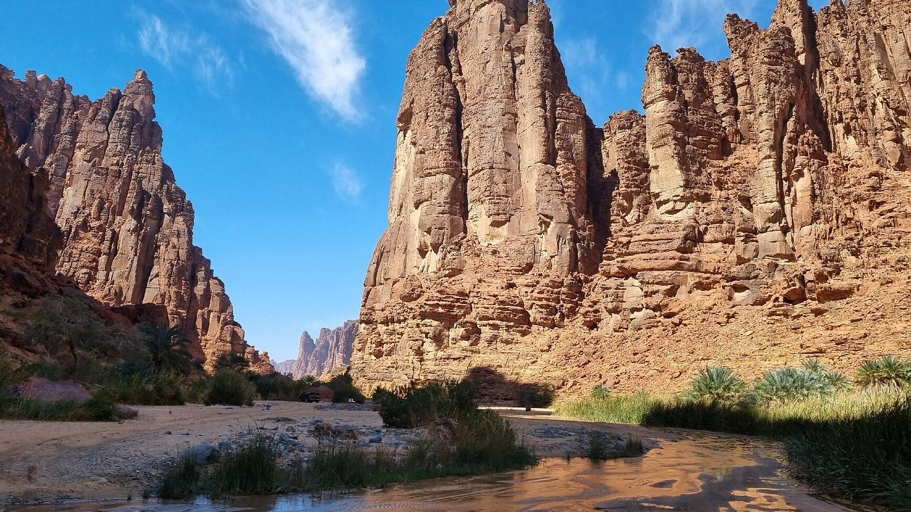
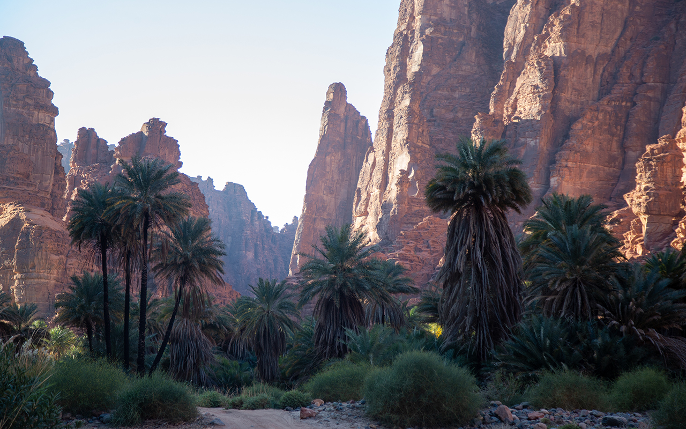

Wadi Al-Disah
Located in the southwest of the Tabuk region, about 255 km from Tabuk city, Wadi Al-Disah is famous for tall sandstone mountains, unique rock formations, and dense palm trees. The valley sometimes has flowing water creating a green oasis in the desert.


Tourism Activities
- Nature exploration
- Photography
- Hiking and camping
Best Time to Visit
From November to April, when the weather is mild and the valley is greener.
Local Food
Mafrooka Tabukia: a traditional dish made from flour, ghee, and dates or honey.
Al-Maleehiyah: A traditional dish in northern Saudi Arabia. It is prepared with meat cooked with spices and usually served with bread. It is one of the popular foods in some villages around Wadi Al-Disah in the Tabuk region.
Farasan Islands
The Farasan Islands are located in the Red Sea near Jazan, famous for clear blue water, coral reefs, and sandy beaches. The islands are home to mangrove trees, diverse marine life, and Arabian gazelles in protected areas.


Tourism Activities
- Diving and snorkeling
- Fishing
- Boat trips
- Bird watching
Best Time to Visit
Winter and spring, when the weather is pleasant for outdoor activities.
Local Food
Fresh seafood is one of the most famous foods in the Farasan Islands, especially fish and shrimp dishes, as the islands are known for their rich marine life and fishing traditions.